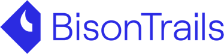

"Oasis Network (ROSE) es una cadena de bloques de capa 1 centrada en la privacidad
creada para las finanzas abiertas y una economía de datos responsable utilizando
Cosmos SDK. Eso permitirá a Oasis interactuar con el ecosistema de la cadena de
bloques habilitada para Cosmos (ATOM) cuando se lance su Protocolo de
comunicación entre cadenas de bloques."
Tecnología
Escalable, Confiable y Versátil
Oasis Network separa el consenso y la ejecución en dos capas, la capa de consenso y la capa ParaTime,
para una
mejor escalabilidad y una mayor versatilidad.
Cargas de trabajo paralelas
La separación del consenso y la ejecución permite que múltiples ParaTimes procesen transacciones en
paralelo,
lo que significa que las cargas de trabajo complejas procesadas en un ParaTime.
Contratos confidenciales
La primera red que admite contratos inteligentes confidenciales. Oasis Eth/WASI Runtime es un ejemplo de
código
abierto de ParaTime confidencial que utiliza enclaves seguros para mantener la privacidad de los datos
mientras
se procesan.
Efficient Design
The network’s unique system of discrepancy detection makes Oasis more efficient than sharding and
parachains —
requiring a smaller replication factor for the same level of security.
Capas paralelas de contratos
La arquitectura de escalado de Oasis ParaTime admite transacciones de alta velocidad, alta escalabilidad
y
grandes cargas de trabajo al separar la ejecución del consenso.
Tokenización de datos
La combinación única de computación confidencial y blockchain de Oasis Network permite un nuevo
paradigma
llamado datos tokenizados.
Partners
Operadores de Nodos

Developers
Ayuda
Cada compilación de DApp en Ethereum debe usar el mismo tiempo de ejecución, aunque no es el más ideal
para su caso de uso. Un tiempo de ejecución es el entorno en el que se basa una aplicación. Por ejemplo,
el entorno de ejecución ideal para una DAO (organización autónoma descentralizada) es bastante diferente
al de una aplicación DeFi. En pocas palabras, no todos los entornos son ideales para todos los casos de
uso.
Tanto la capa de consenso como la capa ParaTime se pueden actualizar fácilmente sin necesidad de un
tenedor duro.
La comunidad de Oasis ha crecido notablemente rápido desde sus inicios en 2018 y para poder hacer
realidad su visión de construir una economía de datos responsable, es fundamental que la red mantenga
sus raíces y diseño descentralizados.
Un número cada vez mayor de participantes se está uniendo al ecosistema de Oasis y brindando
investigación y desarrollo continuos. Al dar el poder a los miembros de la comunidad Oasis, estamos
descentralizando aún más la Red Oasis en todos los sentidos de la palabra.